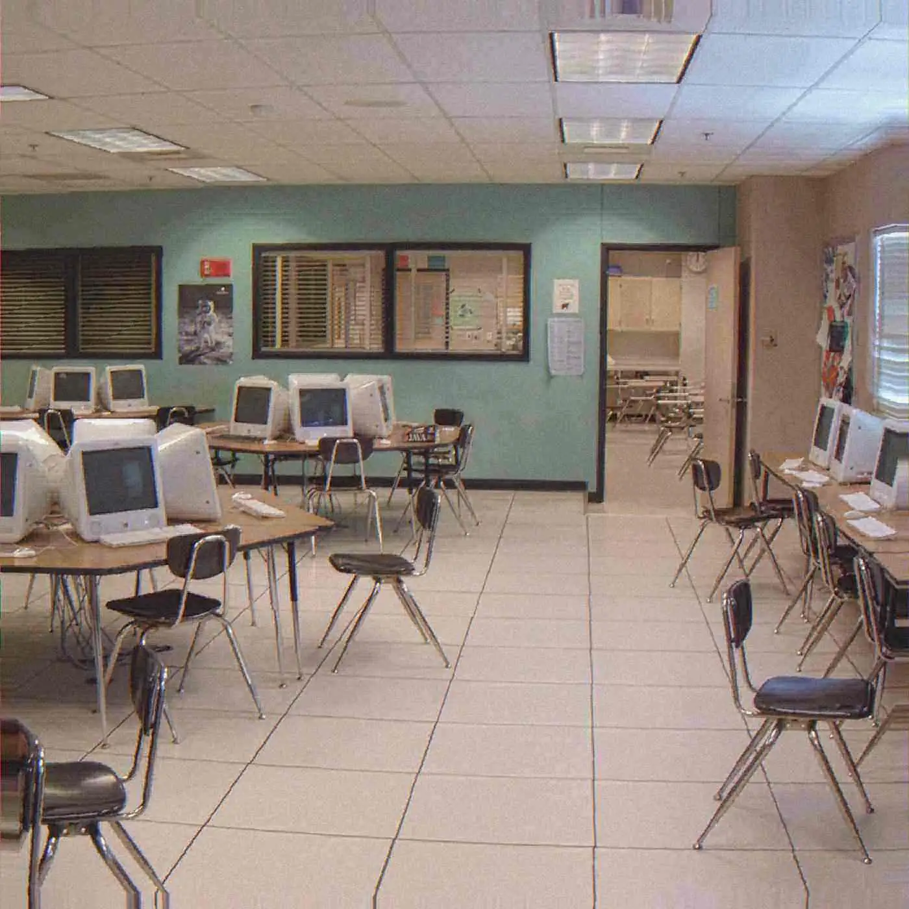

Essay
The Part No Prompt Can Touch
A model can imitate a finished track. It cannot supply the months a person disappeared into before the bridge existed.
- format
- Essay
- date
- Mar 8, 2024
- author
- CJ Archer
- words
- 765 words · 3 min
- photo
- Photo: Tariqabjotu
- catalogue
- CC003
- listen
- j'adore
The scare with generative music was never that a machine can make a sound. Synthesizers are machines. Samplers are machines. A laptop is a machine. The scare is that a model can make something that sounds finished, quickly, without anyone having lived with the unfinished version. Finished and true start sharing a jacket. Listeners who learned to trust surface — a clean vocal, a plausible drop, a lyric that scans — lose a test they did not know they were using. The test was: did a person stay in the room long enough for the room to change the song?
On 8 March 2024 this page used Nihil Young’s Compass as the counter-example at hand: a record built, in his account of it, from things that had actually happened, a marriage, a child, a father’s death. The point was not that autobiography is the only legitimate subject. Instrumental records are legitimate, and plenty of great songs are inventions. The point was cost. A bridge that exists because of what it cost the writer is different from a bridge that exists because the statistical next line was the bridge. You cannot hear the cost with certainty. You can hear, over time, the difference between a body of work that keeps faith with a life and a stream of tracks that keep faith with a prompt.
Hayao Miyazaki, shown an early artificial-intelligence animation demo, called it an insult to life itself. The line is harsh and it has been quoted into the ground, usually without the specific demo that provoked it. It still aims at the right hole. A machine can wear the shape of a feeling. Shape is what models are for: the distribution of shapes people have already made. Life, in Miyazaki’s insult, means the part that is not a distribution — the ugly particular, the grief that does not generalize, the joke that is only funny if you were there. Music has its own version. A song can be made of common parts and still contain one decision that only makes sense because of a private fact. The private fact may never be disclosed. The decision remains.
Every label that sits on records, including this one, has a version of the wait. A sketch that was not a song yet. A night that refused to be efficient. The wait is easy to romanticize and easy to fake. Romanticizing it produces the myth of the suffering artist, which has covered a lot of ordinary bad behavior. Faking it produces liner notes about process that the music does not earn. The practical version of the wait is less glamorous. You play the loop until you are sick of it. You notice the bar that is lying. You throw out a chorus you were proud of yesterday. None of that is available to a prompt, because a prompt does not get sick of anything. It does not have a yesterday.
There is a use of these tools that does not trigger the insult. A mixer uses a machine. A drummer uses a machine when the drum is electronic. The line is whether the person can still tell the truth about what they rejected. If you can say “the model offered this and I threw it out because it was the average of the song,” you are producing. If you cannot tell the average from the song, you are curating a slot. Curation is a real job and it is not the same job. Club Copy’s pages keep saying, in different words, that records are finished by people: Forsberg’s “finished when they leave,” the production credit on j'adore, Riscape’s split between a writer’s name and a producer’s name. Those sentences are claims about persons. They are testable only by the records, but they are the right claims to make in a year when the alternative is a finished-sounding file with no one willing to own the ugly version.
The part no prompt can touch is small and easy to overstate. It is not “soul,” a word that has excused too much. It is accountability over time. A person who puts their name on a record will have to hear it in a year, in a room, next to the last one they signed. A model does not hear. Leaving the rejected take in the folder, which this desk does as a matter of craft and not of purity, is a way of keeping the accountability visible to yourself. The folder is not a moral stage. It is how you prove, later, that the finished version was a choice.